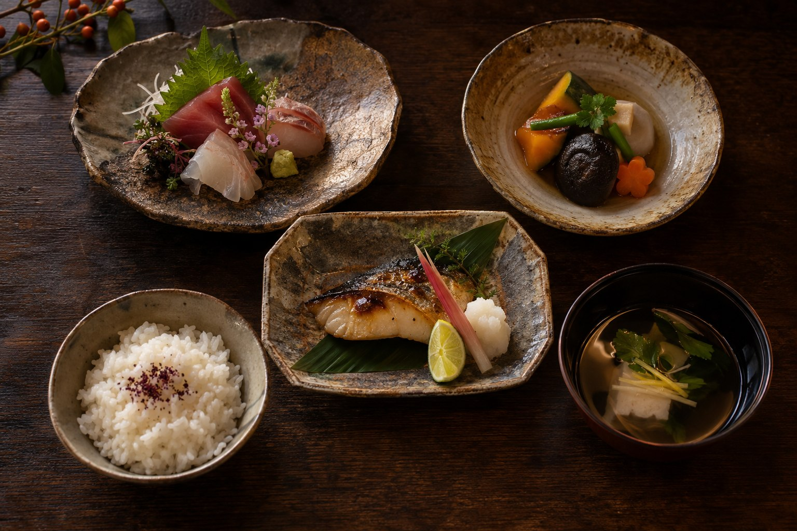

季のコース
9,800円（税込）
七品 / 目安 1時間30分
澄を初めて訪れる夜や、
お酒とともに軽やかに楽しみたい日に。
- 季節の先付
- 秋野菜ときのこの椀
- 本日のお造り
- 旬魚の焼き物
- 根菜の炊き合わせ
- 季節のご飯・香の物
- 小さな甘味
01 / CUISINE
秋の香りを、一皿ずつ。素材の表情をそのままに。

秋のおまかせ / 10–11月
焼きたての香ばしさ、だしの温かさ、
きのこの深い香り。
ひとつの季節にも、いくつもの表情があります。
澄のお料理は、その日の素材から。
少しずつ、ゆっくりとお楽しみください。
TWO WAYS TO ENJOY
9,800円（税込）
七品 / 目安 1時間30分
澄を初めて訪れる夜や、
お酒とともに軽やかに楽しみたい日に。
13,800円（税込）
九品 / 目安 2時間
季節を、もう少し深く。
会話と余韻を大切にしたい夜に。
表示はすべてお一人様・税込です。飲み物は別料金、サービス料はありません。
内容は架空の献立例です。アレルギー対応の確認や実際の予約はできません。